GTA VI’da böyle görünür
Altta oyunun İngilizce altyazısı, hemen üstünde Robz Vision’ın Türkçesi. Türkçe kutu uygulamanın kendi çizim koduyla çizildi.
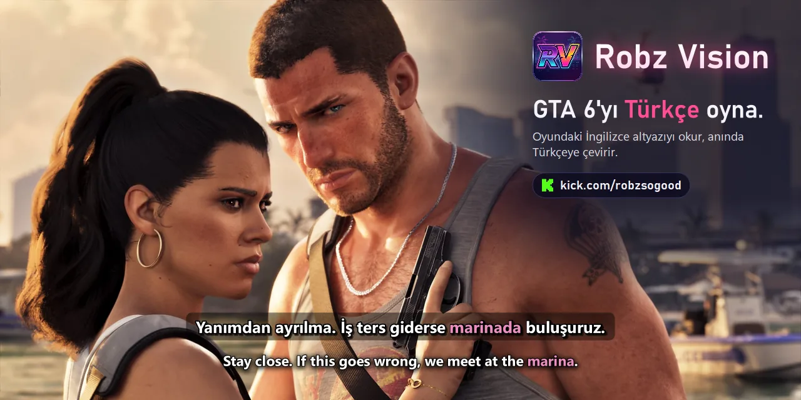
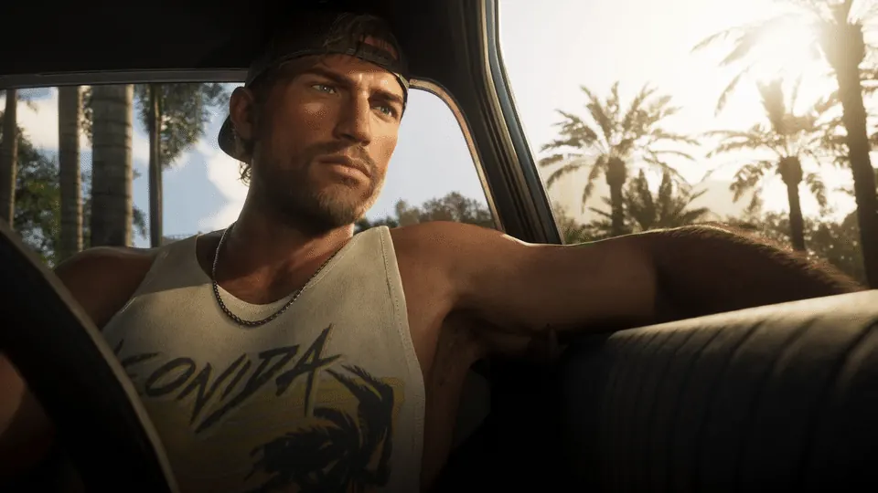
Oyun görseli © Rockstar Games / Take-Two Interactive (GTA VI resmî tanıtım görselleri). Robz Vision bağımsız bir hayran projesidir, Rockstar Games ile bir bağlantısı yoktur. Altyazı cümleleri örnektir, oyundan alıntı değildir.
Kimin için
Robz Vision bilgisayar ekranındaki altyazıyı okur. Oyunun görüntüsü bilgisayarınızda olduğu sürece çalışır.
-
Bilgisayarda oynayanlar
PC’de oynadığınız İngilizce altyazılı oyunlar. Altyazının çıktığı alanı bir kez seçersiniz, Türkçe çeviri oyunun üstünde belirir.
-
PS5’i PS Remote Play ile oynayanlar
Konsoldaki oyunu PS Remote Play ile bilgisayarda açıp oynarken altyazılar Türkçeye çevrilir. GTA VI gibi konsol oyunları için yol bu. Kurulumu adım adım anlattık.
-
Kick ve OBS yayıncıları
Çeviri OBS’e Tarayıcı Kaynağı olarak eklenir, izleyiciler yayında Türkçe altyazıyı görür. Ekranınızdaki kutu varsayılan olarak yayına girmez.
Televizyonda çalışmazKonsolu doğrudan televizyona bağlayıp oynuyorsanız Robz Vision görüntüyü göremez. Oyunun görüntüsü bilgisayar ekranında olmalı: PS Remote Play, Xbox uygulaması ya da bir capture kartının önizleme penceresi.
Televizyonda oynuyorsanız
TV uygulamaları HDMI’dan gelen konsol görüntüsünü okuyamaz. Araya bir bilgisayar koyarak çeviriyi yine de TV ekranında görebilirsiniz:
- Bilgisayarı TV’ye HDMI ile bağlayınEn kolayı. TV bilgisayarın ekranı olur; konsol yerinde kalır. PS Remote Play’i bilgisayarda tam ekran açarsınız, Türkçe kutu TV’de oyunun üstünde görünür. Ağa kabloyla bağlanmak görüntüyü netleştirir.
- Kablosuz yansıtınAynı kurulum, kablo yerine bilgisayar ekranını Windows’ta Win+K ile TV’ye yansıtırsınız (LG’de Screen Share). Gecikme artar; hikâye oyunlarında genelde sorun olmaz. Türkçe kutu TV’de görünmezse “Yayında da görünsün”ü açın.
- Capture kartı kullanınEn net görüntü: konsol → capture kartı → bilgisayar → TV. Remote Play sıkıştırması olmadığı için altyazı daha net okunur. PS5’te Ayarlar → Sistem → HDMI → HDCP’yi Etkinleştir kapalı olmalı.
Kablolar, TV ayarları ve Windows’ta ekran seçimi çizimlerle: PS5’i televizyonda oynuyorum. Capture kartıyla: Yol 4.
Adım adım kurulum
Hiç bilmiyorsanız buradan başlayın. Önce neler gerektiğine bakın, Robz Vision’ı kurun, sonra oynadığınız yere göre yolunuzu seçin. Ne kuracağınızı biliyorsanız doğrudan yolunuzu seçin.
Çizimlere dokunursanız büyük boyutu yeni sekmede açılır.
Hiç bilmiyorsanız buradan başlayın. Üç kısa soruyu yanıtlayın; size neler gerektiğini, hangi kablonun nereye takılacağını ve çeviriyi nasıl açacağınızı adım adım gösterelim.
Neler lazım
Hepsi her yolda gerekmez. Yolunuzu 3. adımda seçeceksiniz.
Sizin kurulumunuz için gerekenler. Elinizde olanları işaretleyin.
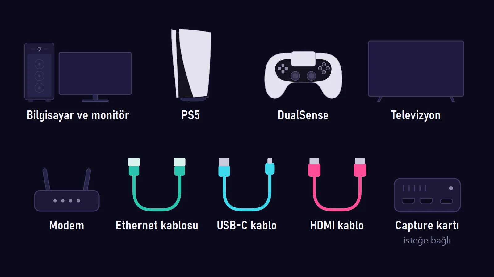
(büyük boyutu yeni sekmede açılır)- Windows bilgisayar ve monitör
- Robz Vision bunda çalışır: Windows 10 (2004 ve sonrası) ya da Windows 11, 64 bit. Ekran kartı şart değil; hızlı çeviri işlemcide çalışır. Güçlü bir ekran kartınız varsa daha iyi çeviren yerel yapay zekâyı da kurabilirsiniz. Her yolda.
- İnternet
- İlk açılışta modelleri bir kez indirmek için. Her yolda.
- Boş disk alanı
- Yapay zekâ kurulurken yaklaşık 15 GB. Windows 10 22H2 ya da Windows 11 gerekir.
- PS5
- Oyun PS5’te çalışır, görüntüsü bilgisayara gelir. Yol 2, 3 ve 4.
- DualSense kol
- Kolu bilgisayara takıp oynarsınız (Yol 2 ve 3). Capture kartı yolunda kol PS5’e bağlı kalır.
- USB-C kablo
- Kolu bilgisayara bağlar: PS5’in kutusundan çıkan şarj kablosu olur. Kablo yerine Bluetooth da olur. Yol 2 ve 3.
- Modem
- PS5 ile bilgisayar aynı modeme bağlı olmalı. Yol 2 ve 3.
- Ethernet kablosu (önerilir)
- PS5’i modeme kabloyla bağlamak görüntüyü netleştirir. Kablo şart değil. Yol 2 ve 3.
- Televizyon
- HDMI girişi olan bir televizyon, marka fark etmez. Capture kartı yolunda isteğe bağlı. Yol 3 ve 4.
- HDMI kablo
- Bilgisayarı TV’ye bağlar; TV bilgisayarın ekranı olur. Capture kartı yolunda bir HDMI kablo da PS5’i karta bağlar. Yol 3 ve 4.
- Capture kartı
- PS5’in HDMI görüntüsünü USB ile bilgisayara aktarır. En net görüntü bu yolda; görüntüyü OBS’te açarsınız. Yalnız Yol 4.
- OBS (yayın için)
- Türkçe altyazıyı yayına ekler. Yayını her zamanki gibi Kick, Twitch ya da YouTube’a açarsınız; izleyiciler hiçbir şey kurmaz.
Robz Vision’ı kurun
Her yolda aynı. Robz Vision her zaman bilgisayarda çalışır.
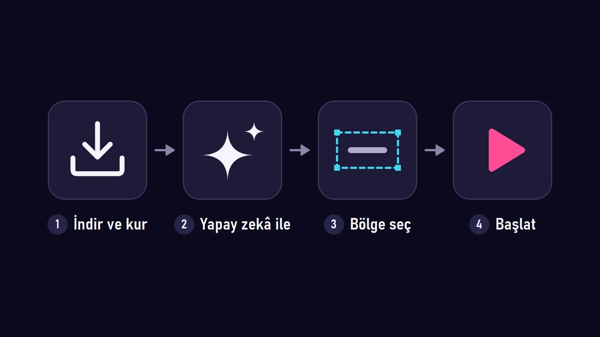
(büyük boyutu yeni sekmede açılır)- Kurulum dosyasını İndir bölümünden indirin.
- Dosyayı çalıştırın. Windows “bilinmeyen yayımcı” uyarısı verirse Ek bilgi → Yine de çalıştır’ı seçin. Neden uyarı verir?
- Sihirbazda İleri’ye basarak kurun. Yönetici izni istemez.
- Robz Vision’ı açın. İlk açılışta çeviri yolunu seçin: ekran kartınız varsa Yapay zekâ ile, yoksa Yalnız hızlı çeviri. Devam’a basın; gereken modeller bir kez iner.
- Robz Vision’ı açın. Çeviri nasıl yapılsın? sorusunda Yapay zekâ ile’yi seçip Devam’a, sonra Kur’a basın; ekran kartınız uygunsa bu seçenek önceden seçili gelir. 12 GB’lık kartta Gemma 4 12B kurulur (Ollama ile birlikte yaklaşık 10 GB). Oyun da bu bilgisayarda çalıştığı için uygulama hafif modeli (Gemma 4 E4B) önerebilir.
- Robz Vision’ı açın. Çeviri nasıl yapılsın? sorusunda Yapay zekâ ile’yi seçip Devam’a, sonra Kur’a basın; ekran kartınız uygunsa bu seçenek önceden seçili gelir. 8 GB’lık kartta daha hafif Gemma 4 E4B (6,6 GB) kurulur.
- Hızlı çeviri modeli (404 MB) inince Şimdi başla’ya basın. Yapay zekâ arka planda iner, hazır olunca kendiliğinden devreye girer.
- Robz Vision’ı açın. Çeviri nasıl yapılsın? sorusunda Yalnız hızlı çeviri’yi seçip Devam’a basın. Hızlı çeviri modeli (404 MB) bir kez iner, sonra program açılır. Uygun bir ekran kartınız varsa Robz Vision onu kendisi bulur ve Yapay zekâ ile’yi önceden seçer. Yapay zekâyı sonradan Çeviri sayfasındaki Önerilen kurulum ile de kurabilirsiniz.
Çeviriyi başlatmak her yolda aynıdır: Canlı sayfasındaki canlı önizlemede altyazının çıktığı alanı fareyle çizin, sonra Başlat’a basın. İlk açılışta ekranın alt-orta altyazı şeridi seçili gelir; altyazı oradaysa dokunmanız gerekmez. Bunun için oyunun görüntüsü bilgisayar ekranında olmalı; nasıl getireceğinizi yolunuz anlatıyor.
Yolunuzu seçin
Oyunu nerede oynuyorsunuz? Size uyan yolu açın.
- Yol 1: Bilgisayarda oynuyorum. Oyun bilgisayarınızda, görüntü monitörde. En kolayı.
- Yol 2: PS5’i bilgisayar ekranında oynuyorum. PS5’in görüntüsü ağ üzerinden bilgisayara gelir.
- Yol 3: PS5’i televizyonda oynuyorum. Araya bilgisayar girer; TV markası fark etmez.
- Yol 4: Capture kartıyla oynuyorum. Kartınız varsa en net görüntü bu yolda.
- Yayın yapacaksanız önce yolunuzu kurun, sonra yayına ekleyin.
Yol 1: Bilgisayarda oynuyorum
Oyun bilgisayarınızda, görüntü monitörde. Ek kablo gerekmez.
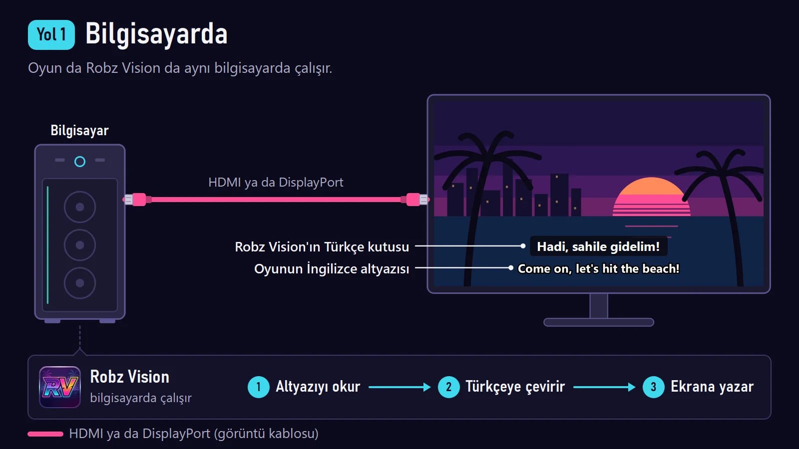
(büyük boyutu yeni sekmede açılır)- Oyunu Pencereli tam ekran modunda açın ve İngilizce altyazıyı açın.
- Robz Vision’ın Canlı sayfasında Çevrilecek bölge başlığının yanında Ekran seçili olsun. Canlı önizlemede oyunun ekranı görünür.
- Önizlemede altyazının çıktığı alanı fareyle çizin; çerçeveyi ortasından tutup taşıyın, köşelerinden boyutlandırın. İlk açılışta alt-orta altyazı şeridi seçili gelir; altyazı oradaysa dokunmanız gerekmez. İnce ayar için Tam ekranda seç: bölgeyi oyunun üstünde, gerçek boyutunda çizip Onayla’ya basarsınız.
- Başlat’a basın. Türkçe kutu oyunun üstünde belirir.
- Kutuyu Ekranımda → Konumu ayarla ile İngilizce altyazının hemen üstüne taşıyın, Konumu kaydet’e basın.
Yol 2: PS5’i bilgisayar ekranında oynuyorum
PS5’in görüntüsü ağ üzerinden bilgisayara gelir, kolu bilgisayara takıp oynarsınız. Bunun için ücretsiz bir uzaktan oynatma programı gerekir: açık kaynak chiaki-ng ya da Sony’nin resmî PS Remote Play uygulaması. İkisiyle de çalışır; adımlar chiaki-ng için.
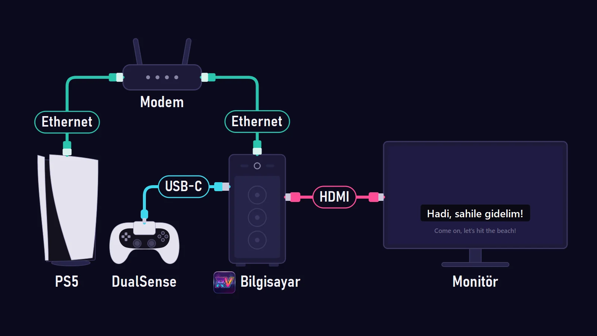
(büyük boyutu yeni sekmede açılır)PS5’te
- PS5’i Ethernet kablosuyla modeme bağlayın; bilgisayar da aynı modeme bağlı olsun. Kablo şart değil ama görüntüyü netleştirir.
- Ayarlar → Sistem → Uzaktan Oynama → Uzaktan Oynama’yı Etkinleştir’i açın.
- İsterseniz PS5’i dinlenme modundan bilgisayardan açabilirsiniz: Ayarlar → Sistem → Güç Tasarrufu → Dinlenme Modunda Kullanılabilen Özellikler’de İnternete Bağlı Kalın ve PS5 Sisteminin Ağdan Açılmasını Etkinleştir’i açın.
Bilgisayarda
- chiaki-ng’yi GitHub’daki sürüm sayfasından indirin: Windows için
chiaki-ng-win_x64-MSYS2-installer.exedosyasını indirip kurun. Ya da komut istemindewinget install --id=StreetPea.chiaki-ng -eyazın. Yalnız resmî kaynaklardan indirin. - chiaki-ng’yi açın. Açılan pencerede PSN hesabınızla bir kez giriş yapın. PS5 aynı ağdaysa listede kendiliğinden görünür.
- PS5’i kaydedin. “Automatic Registration Available” yazıyorsa kod gerekmez. Yazmıyorsa PS5’te Ayarlar → Sistem → Uzaktan Oynama → Cihazı Eşleştir’i açın ve ekrandaki sayıyı chiaki-ng’ye girin.
- chiaki-ng’nin ayarlarında (dişli simgesi) 1080p ve 60 FPS’i seçin.
- DualSense’i USB-C kabloyla bilgisayara takın. Bluetooth ile de bağlanır.
- chiaki-ng’de PS5’e bağlanın, oyunu açın ve İngilizce altyazıyı açın.
Robz Vision’da
- Canlı sayfasında Çevrilecek bölge başlığının yanında Uygulama penceresi’ni seçin, listeden chiaki-ng penceresini seçin. Önizlemede o pencerenin görüntüsü belirir.
- Önizlemede, pencerenin görüntüsünün üstünde altyazının çıktığı alanı fareyle çizin; sonra Başlat’a basın.
- Kutuyu Ekranımda → Konumu ayarla ile altyazının üstüne yerleştirin, Konumu kaydet’e basın.
chiaki-ng penceresi başka pencerelerin arkasında kalsa da okunur; simge durumuna küçültmeyin.
Yol 3: PS5’i televizyonda oynuyorum
Yol 2’dekiÖnceki adımdaki kuruluma bir HDMI kablo eklenir: bilgisayar TV’ye bağlanır, TV bilgisayarın ekranı olur. TV markası fark etmez.
Robz Vision bilgisayarda çalışırTelevizyonda ya da PS5’te çalışmaz. PS5’i doğrudan TV’ye bağlarsanız çeviri görünmez; görüntü bilgisayardan geçmeli.
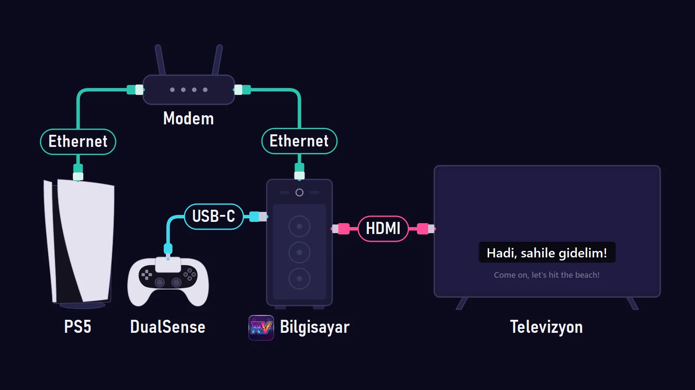
(büyük boyutu yeni sekmede açılır)- Önce Yol 2’yi kurun: PS5’in görüntüsü bilgisayarda chiaki-ng penceresinde açılsın.
- Bilgisayarı HDMI kabloyla TV’ye bağlayın.
- TV kumandasındaki Kaynak (Source, Input) düğmesiyle kabloyu taktığınız HDMI girişini seçin.
- TV’de oyun modunu açın, gecikmeyi azaltır. Menüdeki adı markaya göre değişir.
- Bilgisayarda Win+P’ye basıp Yalnızca ikinci ekran’ı seçin. Görüntü hem monitörde hem TV’de olsun isterseniz Çoğalt’ı seçin.
- chiaki-ng’yi tam ekran yapın.
- Türkçe kutuyu Canlı → Ekranımda → Konumu ayarla ile TV’de altyazının üstüne sürükleyin, Konumu kaydet’e basın.
Kablosuz
TV’niz kablosuz yansıtmayı destekliyorsa kablo yerine Win+K ile bilgisayar ekranını TV’ye yansıtabilirsiniz. Gecikme artar. Türkçe kutu TV’de görünmezse Ekranımda altındaki Yayında da görünsün’ü açın.
Yol 4: Capture kartıyla oynuyorum
PS5’in görüntüsü capture kartından bilgisayara gelir. Sıkıştırma olmadığı için altyazı en net bu yolda okunur. Kol PS5’e bağlı kalır.
Kartın HDMI çıkışında çeviri görünmezTV’yi kartın HDMI çıkışına (passthrough) bağlarsanız görüntü bilgisayardan geçmez. Çeviriyi görmek için TV’yi ya da monitörü bilgisayara bağlayın.
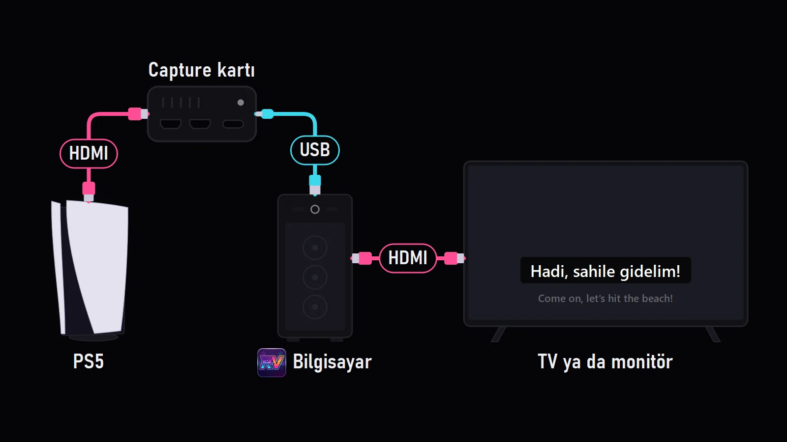
(büyük boyutu yeni sekmede açılır)- PS5’te Ayarlar → Sistem → HDMI → HDCP’yi Etkinleştir’i kapatın. Açıkken kart görüntüyü alamaz.
- PS5’i HDMI kabloyla capture kartının girişine, kartı USB ile bilgisayara bağlayın.
- Kartın görüntüsünü OBS’e kaynak olarak ekleyin. Kaynağa sağ tıklayıp Pencereli Projektör (Kaynak)’ı açın. Bu pencere yalnız oyun görüntüsünü gösterir.
- Robz Vision’ın Canlı sayfasında Çevrilecek bölge başlığının yanında Uygulama penceresi’ni seçin, listeden projektör penceresini seçin. Önizlemede pencerenin görüntüsü belirir.
- Önizlemede, pencerenin görüntüsünün üstünde altyazının çıktığı alanı fareyle çizin; sonra Başlat’a basın.
- Kutuyu Ekranımda → Konumu ayarla ile altyazının üstüne yerleştirin, Konumu kaydet’e basın.
- TV’de oynayacaksanız bilgisayarı HDMI ile TV’ye bağlayın; adımlar Yol 3’te.
OBS’in önizlemesini seçmeyin, orada Türkçe altyazı da olur. Projektör penceresi başka pencerelerin arkasında kalabilir ama simge durumuna küçültülmemeli.
Yayına ekleyin
Yayın yapmıyorsanız bu adımı atlayın. İzleyiciler Türkçe altyazıyı yayında görür; ekranınızdaki kutu varsayılan olarak yayına girmez.
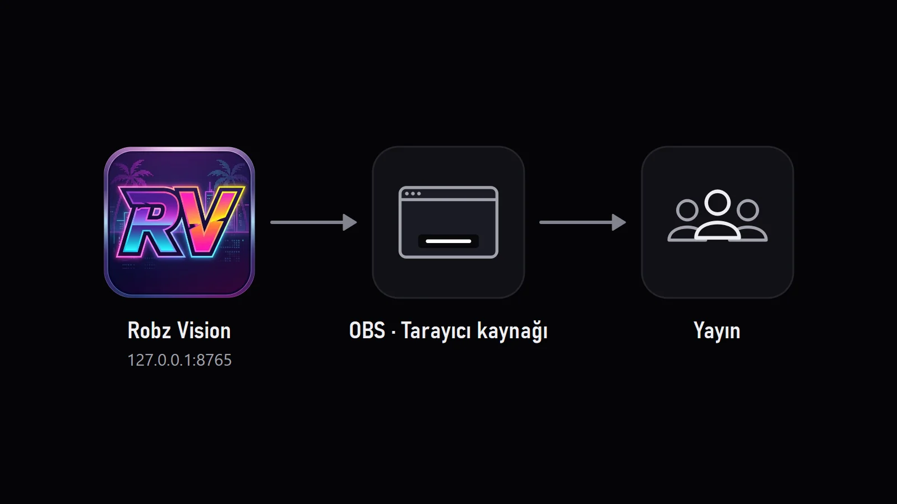
(büyük boyutu yeni sekmede açılır)- Robz Vision’ın Canlı sayfasındaki OBS adresini kopyalayın. Varsayılan adres
http://127.0.0.1:8765/ - OBS’te Kaynaklar altındaki + düğmesine basıp Tarayıcı’yı seçin. Adresi URL alanına yapıştırın, genişlik ve yüksekliği tuvalle aynı yapın, örneğin 1920 × 1080.
- Kaynağı listede oyun görüntüsünün üstüne taşıyın.
- Kick, Twitch ya da YouTube’a her zamanki gibi yayın açın; izleyiciler Türkçe altyazıyı görür.
Ayrıntılar ve ipuçları Yayıncılar için bölümünde.
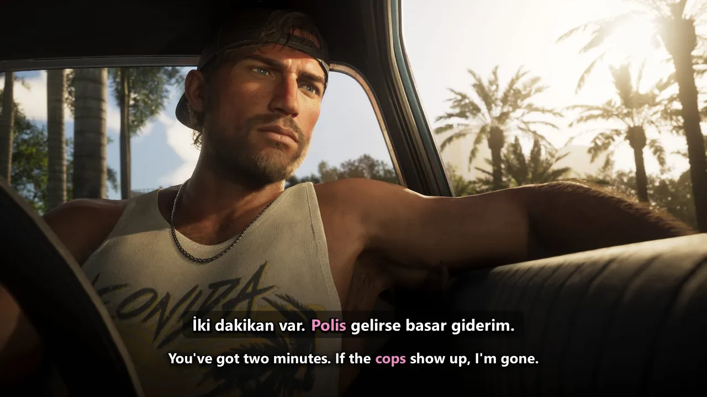
Oyunu açın, Robz Vision’da Başlat’a basın: İngilizce altyazı ekrana geldiğinde Türkçesi de gelir. Ctrl+Alt+T çeviriyi başlatır ve durdurur, Ctrl+Alt+H gizler ve gösterir.
Takılırsanız
- PS5 listede görünmüyor. PS5 açık ya da dinlenme modunda olmalı. PS5 ile bilgisayarın aynı modeme bağlı olduğunu ve Uzaktan Oynama’nın açık olduğunu kontrol edin.
- chiaki-ng’nin penceresi boş kalıyor ya da program açılmıyor. Başlat menüsünden chiaki-ng (OpenGL)’yi açın.
- TV’de görüntü yok. Kumandadaki Kaynak (Source, Input) düğmesiyle kabloyu taktığınız HDMI girişini seçin. Bilgisayarda Win+P ile Yalnızca ikinci ekran’ı ya da Çoğalt’ı seçin.
- Türkçe kutu TV’de yok. Kutuyu Konumu ayarla ile TV ekranına sürükleyin. Kablosuz yansıtıyorsanız Yayında da görünsün’ü açın.
- Türkçe kutu oyunun üstünde görünmüyor. Oyunu Pencereli tam ekran (kenarlıksız) modunda açın; bazı oyunlar özel tam ekran modunda kutuyu üstte göstermez.
- Okumalar bozuk. Uzaktan oynatma görüntüsü sıkıştırılır: PS5’i modeme kabloyla bağlayın, chiaki-ng’de 1080p’yi seçin. Oyunda altyazı boyutunu büyütün; bölgeyi yalnız altyazı satırlarını kapsayacak kadar daraltın.
- Capture kartından görüntü gelmiyor. PS5’te Ayarlar → Sistem → HDMI → HDCP’yi Etkinleştir kapalı olmalı.
Başka sorular için Sık sorulanlar, ayrıntılı anlatım için kullanım kılavuzu.
GTA VI’da Türkçe yok
GTA VI, Türkçe altyazı ve Türkçe seslendirme olmadan çıkıyor. Türkiye’deki oyuncular da hikâyeyi anlayarak oynayabilsin istedik.
Robz Vision’ı bu yüzden aceleyle, bir iki günde yazdık. Elimizden geleni yaptık; eksikleri olabilir. Ücretsiz, açık kaynak ve kurcalamadan kullanılabilecek kadar basit olsun istedik.
GTA VI çıkış noktamız, sınırımız değil. Robz Vision ekranda İngilizce altyazı gösteren her oyunla çalışır: PC oyunları, PS Remote Play ve Xbox uygulaması gibi uzaktan oynatma pencereleri, emülatörler ve capture kartı önizlemeleri.
GTA VI metin dilleri
PlayStation’ın resmî destek sayfasındaki dil tablosu
- İngilizce
- Fransızca
- Almanca
- İtalyanca
- Japonca
- Korece
- Lehçe
- Brezilya Portekizcesi
- Rusça
- Basitleştirilmiş Çince
- Geleneksel Çince
- Meksika İspanyolcası
- İspanya İspanyolcası
- Türkçe listede yok
Seslendirme yalnızca İngilizce. Xbox mağaza sayfası da 13 dil gösteriyor.
Nasıl çalışır
Robz Vision oyuna kod eklemez, belleğini ya da dosyalarını okumaz. Yalnızca ekranda görüneni okur.
-
Ekrandan okur
Altyazının çıktığı alanı Canlı sayfasındaki canlı önizlemede fareyle çizersiniz ya da bir uygulama penceresini gösterirsiniz; ilk açılışta alt-orta altyazı şeridi seçili gelir. Altyazı belirdikten yaklaşık 0,1 sn sonra okunur; plaka, tabela gibi oyun içi yazılar çevrilmez. Altyazı değişmedikçe OCR çalışmaz.
-
Bilgisayarınızda çevirir
quickmt çeviri modeli işlemcide 20–60 ms’de Türkçeye çevirir. Hesap, API anahtarı ya da abonelik gerekmez. Sözlükteki karakter ve yer adlarını olduğu gibi bırakır.
-
Ekranınızda ve OBS’te gösterir
Çeviri, oyunun üstünde taşıyıp boyutlandırabileceğiniz bir kutuda belirir. Yayıncılar aynı altyazıyı OBS Tarayıcı Kaynağı ile izleyicilere gösterir. İkisi birlikte belirir, birlikte kaybolur.
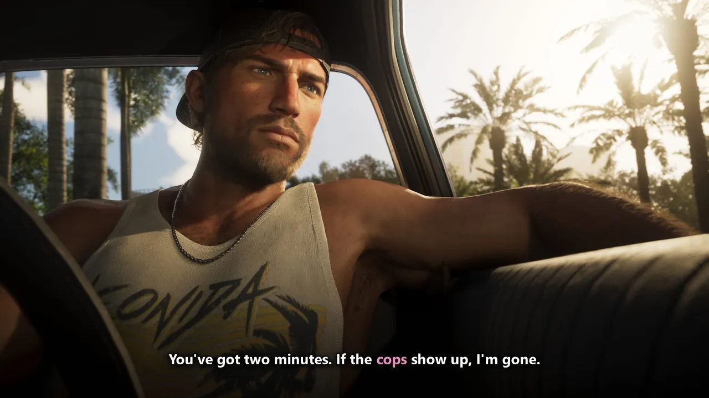
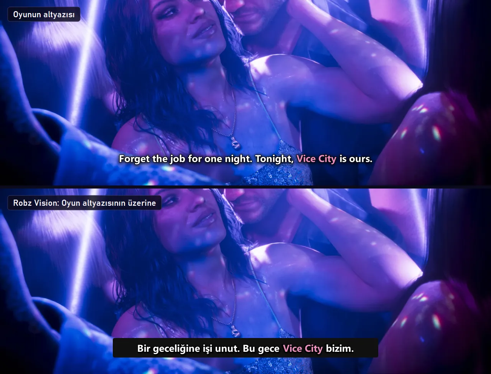
Oyun görseli © Rockstar Games / Take-Two Interactive (GTA VI resmî tanıtım görselleri). Robz Vision bağımsız bir hayran projesidir, Rockstar Games ile bir bağlantısı yoktur. Altyazı cümleleri örnektir, oyundan alıntı değildir; Türkçe kutu uygulamanın kendi çizim koduyla çizilmiştir. Süreler donanıma göre değişir.
Özellikler
- Ücretsiz ve yerel
- OCR ve çeviri bilgisayarınızda çalışır. Varsayılan ayarlarla internet yalnızca ilk açılışta çeviri modelini indirmek için kullanılır.
- Hızlı
- Altyazı belirdikten yaklaşık 0,1 sn sonra okunur. Hızlı çeviri işlemcide 20–60 ms, yerel yapay zekâ 12 GB ekran kartında satır başına yaklaşık 0,35 sn sürer.
- Oyun altyazısının üzerine
- Yeni kurulumda açık: Türkçe, İngilizcenin tam yerine yazılır, koyu bir kutu İngilizceyi örter. Akıllı yazı boyu açıkken Türkçe oyunun yazısıyla aynı boydadır; kapatırsanız sabit boyda yazılır, kutu yine İngilizceyi örter. Konuşma ve görev yazısı aynı anda çıkarsa ikisi de kendi kutusuyla örtülür.
- Adım adım kurulum
- Uygulama Başla sayfasıyla açılır. Kurulum sihirbazı her adımda ilgili yeri ekranda vurgular ve ne yapılacağını anlatır: oyunun görüntüsü, altyazının yeri, çeviri, görünüm.
- İki ayrı çıktı
- Kendi ekranınızda taşıyıp boyutlandırabileceğiniz bir kutu, izleyicileriniz için bir OBS Tarayıcı Kaynağı. İkisinin konumu birbirinden bağımsızdır.
- Bölge ya da pencere
- Altyazının çıktığı alanı Canlı sayfasındaki canlı önizlemede fareyle çizersiniz; ilk açılışta ekranın alt-orta altyazı şeridi seçili gelir. İsterseniz belirli bir uygulama penceresinden okursunuz; pencere başka pencerelerin arkasında kalsa da çalışır.
- Gereksiz iş yapmaz
- Titreyen okumaları ayıklar, daha temiz bir okuma gelirse çeviriyi düzeltir. Konuşmacı adları çevrilmez, ayrı renkte gösterilir.
- Görünüm
- Beş hazır stil: Klasik, Sinema, Kutulu, Sarı, Minimal. Yazı tipi, boyut, renk, kenar, gölge ve arka plan ayarlanır. Ekranınızdaki kutu ile yayındaki altyazı ayrı ayarlanabilir: örneğin ekranda küçük, yayında kutulu ve büyük. Değişiklik anında yansır.
- İsteğe bağlı motorlar
- Ollama ile yerel bir dil modeli, kendi anahtarınızla Google Gemini ya da DeepL. Bu motorların çevirisi gecikirse önce hızlı yerel çeviri görünür, daha iyi sonuç gelince yerine geçer.
- Kısayollar
- Ctrl+Alt+T başlatır ve durdurur, Ctrl+Alt+H çeviriyi gizler, Ctrl+Alt+C temizler. Sistem tepsisi, çeviri önbelleği ve baştan sona Türkçe arayüz.

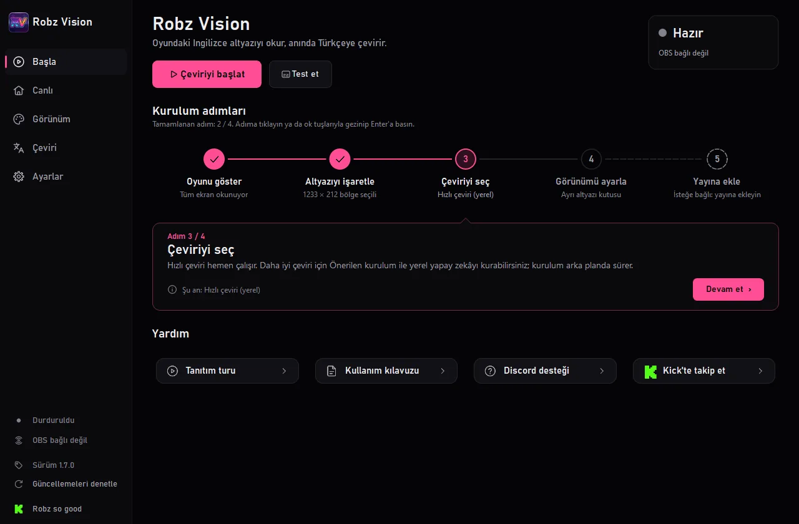

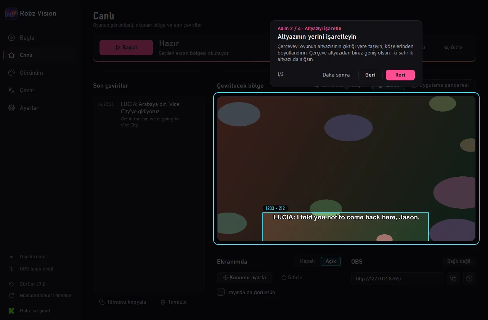


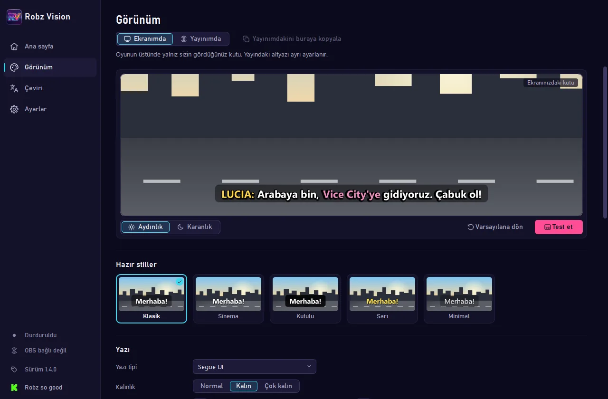

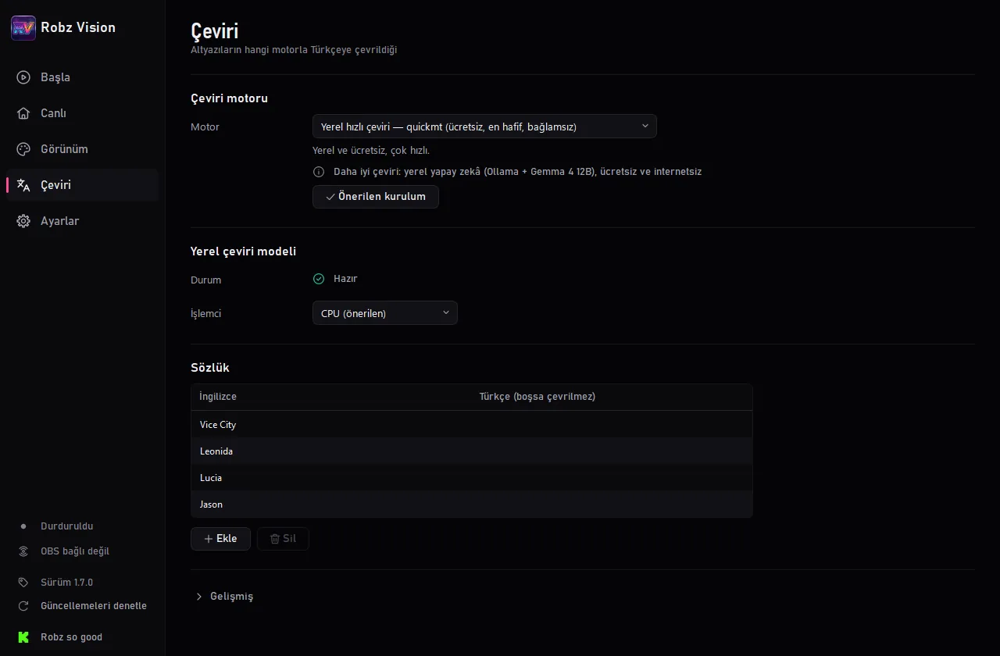
Yayıncılar için
Kick, Twitch ya da YouTube’da yayın yapıyorsanız izleyicileriniz de Türkçe altyazıyı görür. Robz Vision, OBS’e Tarayıcı Kaynağı olarak eklenen bir adres verir.
- Ekranınızdaki kutu varsayılan olarak ekran yakalamaya girmez. İzleyiciler altyazıyı iki kez görmez, Robz Vision da kendi Türkçe yazısını okumaz.
- OBS’teki altyazının yeri ve genişliği ekrandaki kutudan bağımsızdır.
- İsterseniz OBS’te İngilizce altyazının üstünü kapatır; izleyiciler iki dili üst üste görmez.
- Sunucu yalnızca
127.0.0.1adresini dinler, ağdaki başka cihazlar erişemez. Bu yüzden Robz Vision, OBS’in çalıştığı bilgisayarda olmalı.
OBS’e eklemek
- OBS’te Kaynaklar altındaki + düğmesine basıp Tarayıcı’yı seçin.
- Yerel dosya kutusunu boş bırakın, URL alanına Robz Vision’ın Canlı sayfasındaki adresi yapıştırın. Varsayılan adres
http://127.0.0.1:8765/ - Genişlik ve yüksekliği tuvalle aynı yapın, örneğin 1920 × 1080.
- Kaynağı listede oyun görüntüsünün üstüne taşıyın.
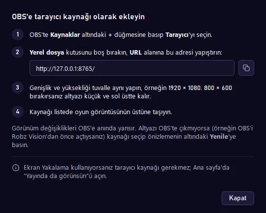
| Kim | Nereye bakar | Ne yapar |
|---|---|---|
| Tek başına oynayan | Oyun ekranına. Türkçe kutu oyunun üstünde, istediği yerde durur. | Bölgeyi seçer, Başlat’a basar, kutunun konumunu bir kez ayarlar. OBS gerekmez. |
| YayıncıKick, Twitch, YouTube | Kendi ekranındaki kutuya. İzleyiciler OBS’teki altyazıyı görür. | Canlı sayfasındaki adresi OBS’e Tarayıcı Kaynağı olarak ekler. İsterse OBS’te İngilizce altyazının üstünü kapatır. |
| İzleyici | Yayına. | Hiçbir şey kurmaz. Altyazının görünümünü yayıncı Görünüm sayfasından ayarlar. |
Robz Vision’ı Kick yayıncısı Robz so good geliştiriyor. Yeni sürümler ve güncellemeler yayınlarda duyurulur.
Kick’te takip etİndir
Önerilen yol kurulum dosyası: indirip çalıştırın, sihirbazda İleri’ye basarak kurun.
Windows için indir-
Kurulum dosyası (önerilen)
Yönetici izni istemez. Kendi kullanıcı klasörünüze kurulur, Başlat menüsüne eklenir, Ayarlar → Uygulamalar’dan kaldırılır.
-
Taşınabilir sürüm
Kısa bir klasöre (ör.
C:\RobzVision) çıkarıpRobzVision.exe’yi çalıştırın. 7z dosyası daha küçüktür. -
Doğrulama
İndirdiğiniz dosyanın SHA-256 özetini bununla karşılaştırabilirsiniz.
Gereksinimler
- Windows 10 (2004 ve sonrası) ya da Windows 11, 64 bit.
- Ek dil paketi gerekmez. Yalnızca programın ayarlarında Windows OCR’ı seçerseniz Windows’un İngilizce OCR dil paketi gerekir; yoksa Ayarlar → Saat ve dil → Dil ve bölge’den English (United States) ekleyin ya da yönetici PowerShell’de şunu çalıştırın:
Add-WindowsCapability -Online -Name "Language.OCR~~~en-US~0.0.1.0"
- İlk açılışta ücretsiz çeviri modeli (yaklaşık 400 MB) bir kez indirilir; indirme bitince program açılır.
ARM işlemcili bilgisayarlar
Ayrı bir ARM64 sürümü yok; çeviri motorunun (CTranslate2) ve birkaç kütüphanenin ARM64 Windows paketi bulunmuyor. Windows 11, x64 programları öykünmeyle çalıştırabildiği için kurulum dosyası ARM’li Windows 11’e de kurulur. Henüz bir ARM cihazda denenmedi.
Windows uyarı verirse
Dosyalar dijital olarak imzalı değil. SmartScreen “bilinmeyen yayımcı” uyarısı verirse Ek bilgi → Yine de çalıştır’ı seçin. Dosyaları yalnızca GitHub’daki sürüm sayfasından indirin.
Adım adım anlatım için kullanım kılavuzu. Kaynak koddan çalıştırmak için README’deki Kurulum bölümü.
Sık sorulanlar
Ücretsiz mi?
Evet. Hesap, API anahtarı ya da abonelik gerekmez; kaynak kod MIT lisanslıdır. Yalnızca Google Gemini ya da DeepL’i seçerseniz kendi API anahtarınızı girersiniz. Gemini’nin ücretsiz katmanı var, DeepL API Free ayda 500 bin karaktere kadar ücretsiz.
İnternet bağlantısı gerekir mi?
Varsayılan ayarlarla yalnızca ilk açılışta: çeviri modeli (yaklaşık 400 MB) Hugging Face’ten bir kez indirilir. OCR modelleri programla birlikte gelir. Yerel yapay zekâyı kurarsanız Ollama’nın kurulum dosyası GitHub’dan, Gemma 4 modeli Ollama’nın kayıt sunucusundan bir kez iner; çeviri sonra internetsiz çalışır. Gemini ve DeepL çevrim içi hizmetlerdir.
Konsolda ya da televizyonda çalışır mı?
Konsolu bilgisayardan oynuyorsanız evet. Televizyonda doğrudan çalışmaz, ama araya bir bilgisayar koyarak çeviriyi TV’de görebilirsiniz: Televizyonda oynuyorsanız. Robz Vision Windows’ta çalışır ve yalnızca bilgisayar ekranındakini okur. PS5 için PS Remote Play, Xbox için Xbox uygulamasıyla konsolu bilgisayardan oynatabilir veya capture kartının görüntüsünü bir pencerede açabilirsiniz: kartın kendi uygulaması ya da OBS’in Pencereli Projektör (Kaynak) penceresi.
Uzaktan oynatma görüntüsü sıkıştırıldığı için altyazı bulanık olabilir. Okumalar bozuksa görüntü kalitesini yükseltin ya da oyunda altyazı boyutunu büyütün.
Verilerim nereye gider?
Varsayılan ayarlarla ekran görüntüsü, OCR ve çeviri bilgisayarınızda kalır. Görüntüler diske kaydedilmez, uygulama kullanım verisi toplamaz. Canlı sayfasındaki canlı önizleme de yalnız ekranda gösterilir; kaydedilmez, gönderilmez. OBS sunucusu yalnızca 127.0.0.1 adresini dinler.
Çeviri önbelleği ve günlükler %LOCALAPPDATA%\RobzVision, ayarlar ve API anahtarları %APPDATA%\RobzVision\ayarlar.json içinde tutulur.
Gemini ya da DeepL’i seçerseniz altyazı metni ve bağlam için önceki birkaç satır o hizmete gönderilir; görüntü gönderilmez. Gemini’nin ücretsiz katmanında Google, gönderilen metinleri ürünlerini geliştirmek için kullanabilir.
Çeviri ne kadar iyi?
Yerel model hızlıdır ama bazen düz çevirir. Ekran kartınız varsa yerel yapay zekâyı kurun: ilk açılışta Yapay zekâ ile’yi seçin ya da sonradan uygulamanın Çeviri sayfasında Önerilen kurulum’a basın. Robz Vision, Ollama’yı ve Gemma 4’ü kendisi indirip kurar (yaklaşık 10 GB). Gemma 4 ücretsizdir, internetsiz çalışır ve önceki satırları görerek çevirir. Kendi anahtarınızla Gemini veya DeepL’i de seçebilirsiniz. Bu motorların çevirisi gecikirse önce hızlı yerel çeviri görünür, daha iyi sonuç gelince yerine geçer.
Oyunun dosyalarına dokunuyor mu?
Hayır. Robz Vision oyuna kod eklemez, belleğini ya da dosyalarını okumaz; yalnızca ekranda görüneni okur. Çevrim içi oyunlarda yine de oyunun kullanım koşullarını kendiniz kontrol edin.
Sorun giderme için README’deki SSS.